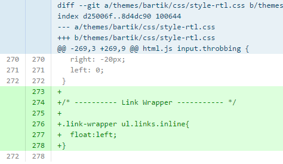

Open Source
A life changing!
Created by Tarek Djebali / @_tarekdj
#SFDTN14
About me!
TAREK DJEBALI

I QUIT MY JOB!

Few years earlier ...
The beginning

BUT!
I wanted to code!
Unluckily!

The web

My first CMS
My second first CMS
My first patch!

Commited by Mr "Dries" himself PLEASE!
My 2nd patch!
But she looks happier than me!
Remember this woman!
Webchick
- The first woman to make the cover of Linux journal.
- Google-O'Reilly Open Source Award
- Drupal 7 & 8 core maintainer
- Director of Community Development @ acquia
Drupal Tunisia
First drupal meetup
Other DrupalTN events
Ubuntu & Drupal install day
#SymfonyTN
1st Drupal sprint
#tnwebdays
Time To spread the world!!!
You remember webchick?
Meanwhile...
The phplist project
Phplist team meeting @Amsterdam